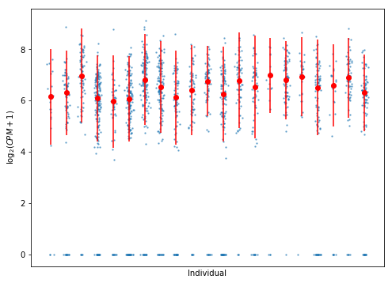
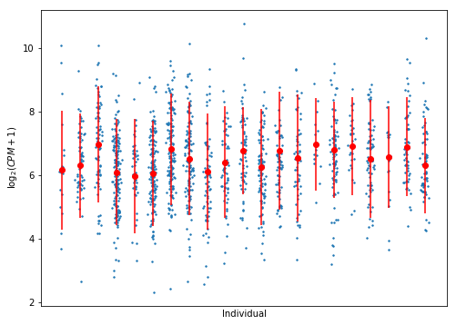

Hurdle model estimation
Table of Contents
Introduction
The key idea of voom (Law et al 2014) is that the distribution of
log-transformed counts per million is approximately Gaussian. Consider the
expression of a single gene in individual \(i\), cell \(j\).
\[ r_{ij} = \mbox{number of reads} \]
Assuming \(r_{ij}\) follows the NB2 negative binomial model (Hilbe 2012):
\[ E[r_{ij}] = \lambda_{ij} \] \[ V[r_{ij}] = \lambda_{ij} + \phi_{ij} \lambda_{ij}^2 \]
Let \(L_j\) be the library size of cell \(j\). Then, by the definition of CPM:
\[ y_{ij} = \log_2(10^6 \times \frac{r_{ij}}{L_j} + 1) \]
\[ = \log_2\left(10^6 \times \left(r_{ij} + \frac{L_j}{10^6}\right)\right) - \log_2(L_j) \]
Assuming that \(L_j \ll 10^6\):
\[ y_{ij} \approx \log_2(r_{ij}) - \log_2(L_j) + 6 \log_2(10) \]
By first order Taylor expansion:
\[ E[y_{ij}] = \mu_{ij} \approx \log_2 \lambda_{ij} + \mathrm{const} \]
By the delta method:
\[ V[y_{ij}] = \sigma_{ij}^2 \approx V[r_{ij}] / \lambda_{ij}^2 = 1/\lambda_{ij} + \phi_{ij} \]
We assume:
\[ y_{ij} \approx N(\mu_{ij}, \sigma^2_{ij}) \]
Now, we seek to write a hierarchical model for \(y\) in terms of the genotype of individual \(i\) to call mean and variance QTLs.
Our idea is to start from generalized linear models for the underlying rate and dispersion:
\[ \log \lambda_{ij} = X_i \beta_\lambda + u_i^\lambda + \epsilon^\lambda_{ij} \]
\[ \log \phi_{ij} = X_i \beta_\phi + u_i^\phi + \epsilon^\phi_{ij} \]
We assume errors are uncorrelated with \(X, \beta, u\) so we can write \(\sigma^2 = V[\epsilon_{ij}^\lambda] + V[\epsilon_{ij}^\phi]\)
Then, the likelihood of each data point is given by:
\[ y_{ij} \sim N(X_i \beta_\lambda + u_i^\lambda, \exp(-(X_i \beta_\lambda + u_i^\lambda)) + \exp(X_i \beta_\phi + u_i^\phi) + \sigma^2) \]
In this model, between individual variance is explained by cis-genotype (\(X_i \beta_\lambda)\), unobserved factors (\(u_i^\lambda)\), and sampling (\(\epsilon_{ij}^\lambda\)).
Within individual variance is explained by the rate of expression (as derived above), cis-genotype (\(X_i \beta_\phi\)), unobserved factors \(u_i^\phi\), and sampling (\(\epsilon_{ij}^\phi\)).
Unobserved factors are needed to account for the fact that two individuals with the same genotype could still have different underlying rate and dispersion of expression.
We can estimate the posterior \(p(\beta, u \mid Y, \cdot)\) this model using a combination of black-box variational inference and variational EM.
TODO: Marginalize out \(u\)
TODO: Specify priors on the correct scales for \(\beta\)
Test case
gene_info.query('name == "ZSWIM7"')
chr start end name strand source
gene
ENSG00000214941 hs17 15879874 15903031 ZSWIM7 - H. sapiens
with gzip.open('/project2/gilad/singlecell-qtl/bulk/genotypes.vcf.gz', 'rt') as f: header = next(f).split() vcf = tabix.open('/project2/gilad/singlecell-qtl/bulk/genotypes.vcf.gz')
def _extract_genotypes(row, vcf, header, window): if row['strand'] == '+': start = row['start'] - window end = row['start'] else: start = row['end'] end = row['end'] + window result = pd.DataFrame(list(vcf.query('chr{}'.format(row['chr'][2:]), start, end)), columns=header).iloc[:,9:].astype(np.float32) return result
genotypes = _extract_genotypes(gene_info.loc['ENSG00000214941'], vcf=vcf, header=header, window=int(1e6)).rename(columns=lambda x: 'NA{}'.format(x))[sorted(annotations_qc['chip_id'].unique())] genotypes = genotypes.T.transform(lambda x: x - x.mean()).fillna(0) genotypes.shape
(21, 2506)
normalizers = (6 * np.log(10) - np.log(umi_qc.agg(np.sum))) / np.log(2)
data = {'onehot': onehot, 'genotypes': genotypes.values, 'counts': umi_qc.loc['ENSG00000214941'].values.astype(np.float32).reshape(-1, 1), 'log_cpm': cpm(umi_qc, log2=True).loc['ENSG00000214941'].values.astype(np.float32).reshape(-1, 1), 'normalizers': normalizers.values.reshape(-1, 1)}
with open('test_data.pkl', 'wb') as f: pickle.dump(data, f)
Plot the data, its mean, and twice its standard deviation per individual:
onehot_cpm = np.ma.masked_equal(data['log_cpm'] * data['onehot'], 0) plt.clf() plt.gcf().set_size_inches(8, 6) plt.scatter(x=np.where(data['onehot'] == 1)[1] + np.random.normal(scale=0.1, size=m), y=data['log_cpm'], s=2, alpha=0.5) plt.errorbar(x=np.arange(n), y=onehot_cpm.mean(axis=0), yerr=2 * onehot_cpm.std(axis=0), fmt='o', c='red') plt.xlabel('Individual') plt.ylabel('$\log_2(CPM + 1)$') plt.gca().set_xticks([]) plt.gcf()

with open('test_data.pkl', 'rb') as f: data = pickle.load(f)
Model specification and inference
m, n = data['onehot'].shape _, p = data['genotypes'].shape onehot = tf.placeholder(tf.float32, [m, n]) genotypes = tf.placeholder(tf.float32, [n, 1]) cell_bias = tf.placeholder(tf.float32, [m, 1]) ind_bias_scale = tf.Variable(tf.ones([n, 1])) ind_bias = ed.models.NormalWithSoftplusScale(loc=tf.zeros([n, 1]), scale=ind_bias_scale) rate_effect_scale = tf.Variable(tf.ones([1, 1])) rate_effect = ed.models.NormalWithSoftplusScale(loc=tf.zeros([1, 1]), scale=rate_effect_scale) log_rate = tf.matmul(onehot, tf.matmul(genotypes, rate_effect) + ind_bias) mean = log_rate + cell_bias disp_effect_scale = tf.Variable(tf.ones([1, 1])) disp_bias = ed.models.NormalWithSoftplusScale(loc=tf.zeros([n, 1]), scale=ind_bias_scale) disp_effect = ed.models.Normal(loc=tf.zeros([1, 1]), scale=disp_effect_scale) disp = tf.matmul(onehot, tf.matmul(genotypes, disp_effect) + disp_bias) resid_var_scale = tf.Variable(tf.zeros([1])) var = tf.exp(-log_rate) + tf.exp(disp) + tf.exp(resid_var_scale) log_cpm = ed.models.Normal(loc=mean, scale=tf.sqrt(var)) q_ind_bias = ed.models.Normal(loc=tf.Variable(tf.zeros([n, 1])), scale=tf.Variable(tf.ones([n, 1]))) q_disp_bias = ed.models.Normal(loc=tf.Variable(tf.zeros([n, 1])), scale=tf.Variable(tf.ones([n, 1]))) q_rate_effect = ed.models.Normal(loc=tf.Variable(tf.random_normal([1, 1])), scale=tf.Variable(tf.random_normal([1, 1]))) q_disp_effect = ed.models.Normal(loc=tf.Variable(tf.random_normal([1, 1])), scale=tf.Variable(tf.random_normal([1, 1]))) inf = ed.ReparameterizationKLKLqp( latent_vars={ rate_effect: q_rate_effect, ind_bias: q_ind_bias, disp_effect: q_disp_effect, disp_bias: q_disp_bias, }, data={ onehot: data['onehot'], genotypes: data['genotypes'][:,0:1], cell_bias: data['normalizers'], log_cpm: data['log_cpm'], })
inf.run(n_samples=10, optimizer=tf.train.AdamOptimizer(learning_rate=5e-2))
1000/1000 [100%] ██████████████████████████████ Elapsed: 7s | Loss: 4225.791
res = pd.DataFrame( np.hstack(ed.get_session().run([q_rate_effect.mean(), q_rate_effect.variance(), q_disp_effect.mean(), q_disp_effect.variance()])), columns=['rate_effect_mean', 'rate_effect_var', 'disp_effect_mean', 'disp_effect_var']) res
rate_effect_mean rate_effect_var disp_effect_mean disp_effect_var 0 -0.005486 0.000523 0.282421 0.053938
Plot a posterior predictive draw, and the real data means and twice standard deviations.
post_pred = ed.get_session().run( ed.copy(log_cpm, inf.latent_vars), { onehot: data['onehot'], genotypes: data['genotypes'][:,0:1], cell_bias: data['normalizers'], log_cpm: data['log_cpm'], }) plt.clf() plt.gcf().set_size_inches(8, 6) plt.scatter(x=np.where(data['onehot'] == 1)[1] + np.random.normal(scale=0.1, size=m), y=post_pred, s=2) plt.errorbar(x=np.arange(n), y=onehot_cpm.mean(axis=0), yerr=2 * onehot_cpm.std(axis=0), fmt='o', c='red') plt.xlabel('Individual') plt.ylabel('$\log_2(CPM + 1)$') plt.gca().set_xticks([]) plt.gcf()

Next steps
The key idea of mast (Finak et al 2015) is to model non-zero \(R\) using a
Gaussian distribution, and model zero \(R\) using logistic regression. The
key distinction between this approach and the zero-inflated
negative binomial model is that zeroes are assumed to arise from only one
process.
This naturally suggests a Bayesian model which simultaneously calls mean and variance QTLs based on the likelihood:
\[ Y \mid Y = 0 \sim \mathrm{Bernoulli}(1 - \mathrm{sigmoid}(AX\theta_m + \delta)) \]
\[ Y \mid Y > 0 \sim N(AX\theta_m + \delta, \exp(-AX\theta_m - \delta) + \exp(AX\theta_v) + \sigma^2) \]
where \(\delta\) is a known constant that depends on library size, \(A\) maps from cells to individuals, and \(X\) is the genotype matrix.
The key issues are:
Do we need to actually fit the dropout model?
mastconditions on the observed \(Y = 0\), not on a latent \(Z = 0\), which means we could simply do the same and ignore zeros.If we did so, then mean/variance QTL effect size estimation will be less robust for genes with high dropout. This might not be a problem depending on the stringency of gene filtering.
For a single gene, do we need to worry about mean QTLs in LD with variance QTLs? We previously built multivariate mean/variance QTL models which could account for LD, and could share information between the mean and variance models.
The fundamental problem is that if we assume that the mean and dispersion both have genetic components, then the mean is no longer independent of the dispersion.
This actually could be derived without using the fact that both depend on the same genotypes if we use second-order Taylor expansion:
\[ \mu \approx \log_2 \lambda + \frac{V[R]}{2 \lambda^2} \]
Do we need to share parameters between genes?
mastassumes genes are conditionally independent. But this is no longer true when nearby genes can be driven by overlapping (or correlated) cis-genotypes.We previously developed multiresponse QTL models which learned the target genes of causal variants, allowing the true target gene to explain away nearby correlated genes (Park et al 2017).